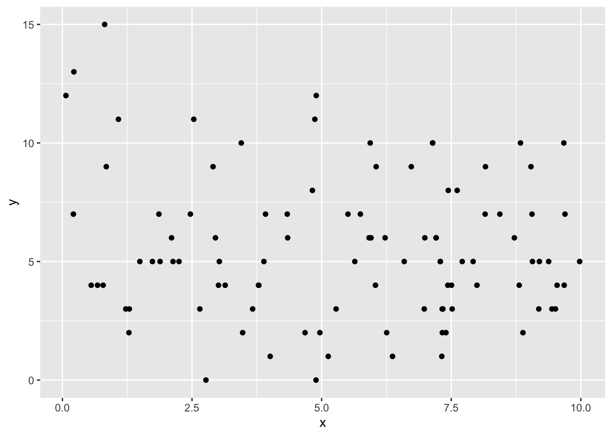
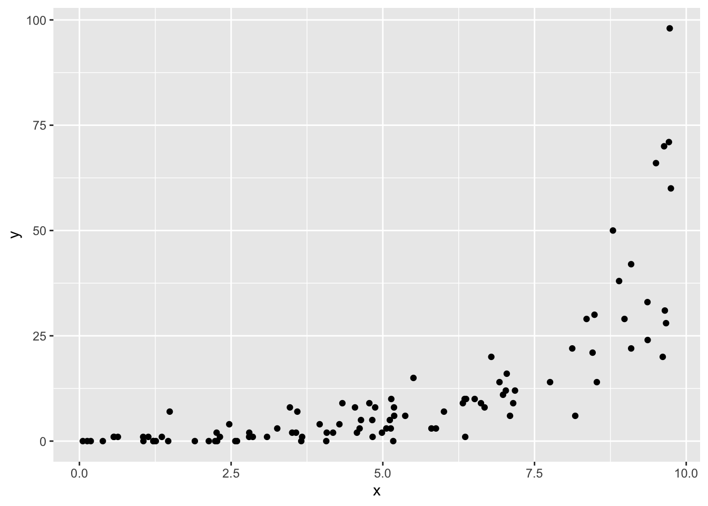

This lab will guide you through running the likelihood ratio test to calculate and interpret \(P\)-values. You can download the template .qmd file for this lab here:
The template will prompt you to work through the following sections.
25.1 Understanding the Likelihood Ratio Test
The goal of the likelihood ratio test is to compare two, nested models, and see if the added parameters of the more complex model are warranted by the data. To do that, we will calculate a \(P\)-value. A \(P\)-value less than 0.05 is our usual cut off for rejecting the null. The null is that the added parameters of the more complex model are just fitting noise in the data.
We can also think of our two nested models like this:
\[
\begin{aligned}
\log(\mu)_{full} &= b_0 + b_1 x \\
\log(\mu)_{0} &= b_0 + 0 \times x \\
\end{aligned}
\]
where the \(full\) subscript indicates the more complex model and the \(0\) subscript indicates the reduced model nested within it. So a likelihood ratio test between these two models can also be thought of as testing whether \(b_1 = 0\) (the null) or not.
Notice the formulation of the models: we’re modeling the log mean \(\mu\) and calling it \(\mu\), so you might guess we will be working with negative binomial generalized linear models. That would be correct.
The likelihood ratio test statistics (for any nested models, negative binomial or otherwise) is
and has a \(\chi^2\) distribution with degrees of freedom equal to the difference in number of parameters. In the case of the full and reduced models above, the difference in number of parameters in one. The degrees of freedom is equal to the difference in numbers of parameters because each added parameter has the opportunity to increase the log likelihood of a model just by chance.
Let’s visualize the \(\chi^2\) distribution with one degree of freedom
If we observed a likelihood ratio test statistics of \(\Lambda = 3\) we could visualize the associated \(P\)-value as the area under the curve for \(\Lambda \geq 3\) like this
So with a likelihood ratio test statistic of \(\Lambda = 4\) and \(df = 1\) we would reject the null because \(P < 0.05\), meaning there is less than a 0.05 chance of observing a \(\Lambda\) statistic of this magnitude, and the data support the additional parameter of the more complex model.
What if we were comparing models with a difference of 2 parameters? The degrees of freedom would be 2. Would we still reject the null with a \(\Lambda = 4\)? Let’s visualize and calculate to find out
No, we would not reject the null because the \(P\)-value is substantially larger than 0.05. More degrees of freedom shift the null \(\chi^2\) distribution toward larger values, meaning we need even larger differences in log likelihood values between full and reduced models to warrant adding the multiple additional parameters of the null.
25.2 Applying the Likelihood Ratio Test
But now let’s try it out with your own model! Refer back to the Poisson GLM you’ve been working with that uses area as an explanatory variable as well as two other explanatory variables. Do the data support the inclusion of those additional variables? To find out go through the steps:
translate your model into a negative binomial GLM with glm.nb from MASS
create a reduced model that lacks the explanatory variables of interest
visualize the \(\chi^2\) distribution with appropriate degrees of freedom and highlight the tail probability (i.e. the area greater than or equal to the \(\Lambda\) you calculated for your actual model)
use pchisq to compute the \(P\)-value
use anova to confirm your calculated \(P\)-value
25.3 Understanding \(P\)-values
In this section we will use simulation to prove to ourselves several aspects of the likelihood ratio test and \(P\)-values.
Even with random data that have no statistical connection to any explanatory variable, adding an explanatory variable to a model increases the log likelihood compared to an “intercepts only” model
A likelihood ratio test for such data will produce a \(P\)-value greater than 0.05 most every time, but not every time! (More on that soon)
Simulated data where the response variable really does respond to an explanatory variable will almost always be confirmed by a likelihood ratio test as long as we have sufficient sample size.
First let’s see how our data simulation will work. Let’s see how to simulate data without any true relationship between response and explanatory variables:
# would-be explanatory variablex <-runif(100, 0, 10)# mean for a negative binomialmu_no_effect <-exp(-1+0.5*mean(x))# response variabley_no_effect <-rnbinom(length(x), mu = mu_no_effect, size =8)# put all togetherdat_no_effect <-data.frame(x, y = y_no_effect)head(dat_no_effect)
x y
1 9.541583 4
2 7.289848 5
3 2.533734 11
4 4.965589 2
5 7.517335 3
6 6.990452 6
Let’s make a quick visualization
ggplot(dat_no_effect, aes(x, y)) +geom_point()

Figure 25.4
Now let’s see how to simulate data with a true effect of x on y
# explanatory variablex <-runif(100, 0, 10)# mean for a negative binomial *with* effectmu_yes_effect <-exp(-1+0.5* x)# response variabley_yes_effect <-rnbinom(length(x), mu = mu_yes_effect, size =8)# put all togetherdat_yes_effect <-data.frame(x, y = y_yes_effect)# again, visualizeggplot(dat_yes_effect, aes(x, y)) +geom_point()

Figure 25.5
Now if we want to see if the effect of x is supported by a likelihood ratio test we need to make two models: one with x and one without. Here is the way to do that, using the model where x really has no effect
# full modelmod_no_effect_full <-glm.nb(y ~ x, data = dat_no_effect)# reduced model, note: we just say `y ~ 1` to mean "intecept only"mod_no_effect_0 <-glm.nb(y ~1, data = dat_no_effect)# calculate log likelihoodslogLik(mod_no_effect_full)
'log Lik.' -247.1124 (df=3)
logLik(mod_no_effect_0)
'log Lik.' -247.9 (df=2)
Which one is bigger (i.e. less negative)?
Despite the difference in log likelihoods, is that difference significant? That’s the job for the likelihood ratio test. Remember, the likelihood ratio test statistic is
# 1 df because models differ by only one parameterpchisq(L_no_effect, 1, lower.tail =FALSE)
'log Lik.' 0.2094591 (df=3)
Now repeat those steps but for the data where there truly is an effect of x on y
25.3.1 Repeated simulations show a false positive rate of 5%
If our threshold for rejecting the null is \(P \leq 0.05\), then this is also saying we are accepting a false positive rate of 5%. A false positive occurs when we reject the null even though the null is actually true. Let’s use a for loop to repeatedly simulate data where y really doesnot respond to x to prove this to ourselves.
Here is a skeleton of some code to get you started:
# note: this code chunk is not being evaluated, make sure to # change `eval` to `true`# number of simualtions (i.e. steps of for loop)n_sim <-1000# set up vector to hold P-valuespvals <-numeric(n_sim)# loop `n_sim` times, each time simulating new data and # calculating likelihood ratio test P-valuefor(i in1:n_sim) {# simulate `x`, `mu`, `y` like we did before when # `x` actually has no effect on `y`# combine into one data.frame# fit full and reduced models as before# calculate Lambda# calculate p-val and store in pre-built vector pvals[i] <-pchisq(...)}
Now see how many times we reject the null
# make sure to flip `eval` to `true`sum(pvals <=0.05) /length(pvals)# or equivalentlymean(pvals)